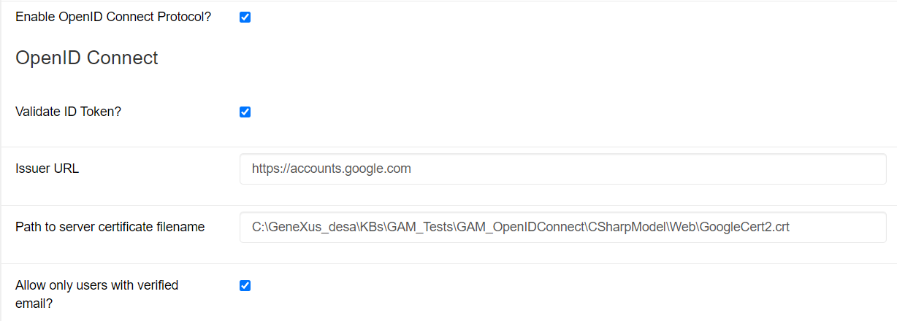
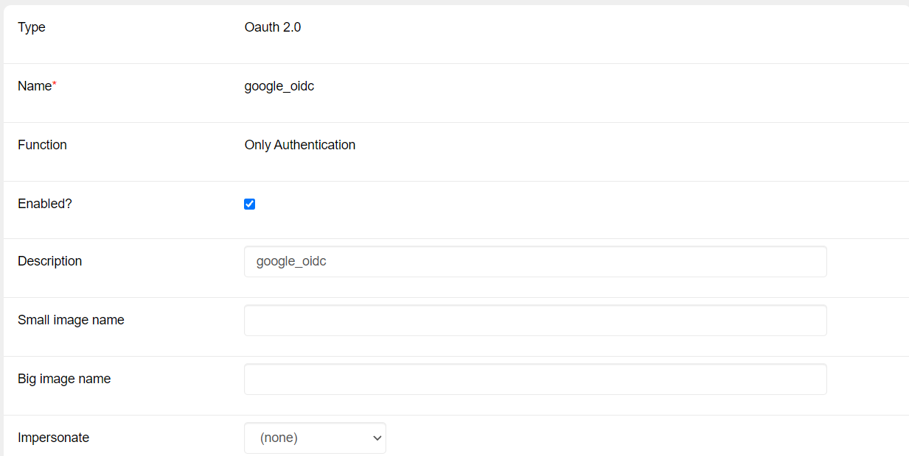
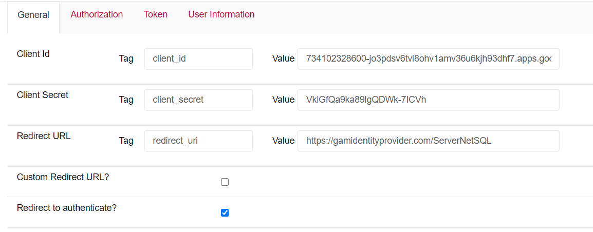
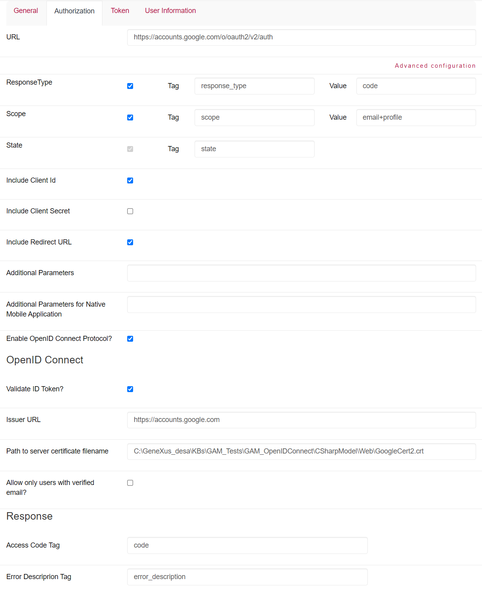
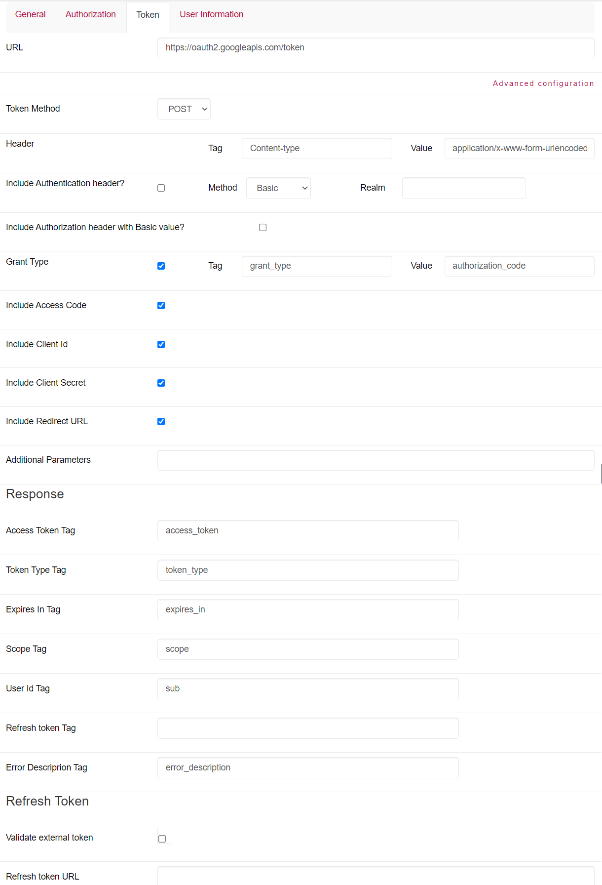
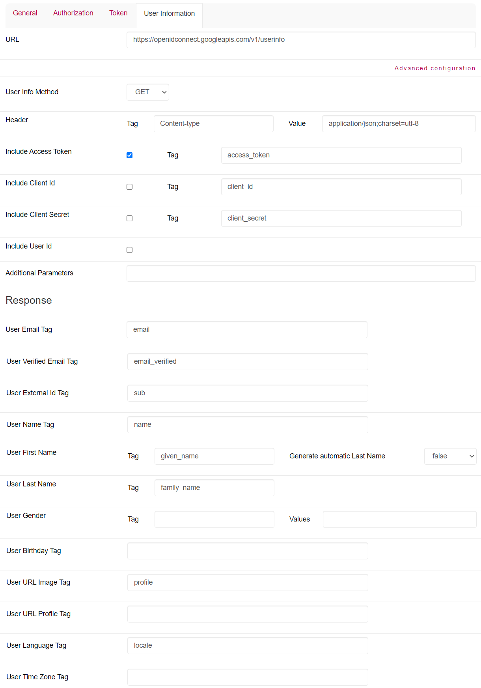

OpenID Connect (OIDC) is an authentication protocol that works with OAuth 2.0 by implementing authentication as an extension of the OAuth 2.0 authorization process. To use this extension, the app manager must include the openid scope in the Authorization Request when setting the authentication type. The information about the authentication performed is returned in a JSON Web Token (JWT) called ID Token.
Remember that:
The current implementation of GAM makes it possible to authenticate an application against OAuth 2.0 identity providers because OIDC works with OAuth 2.0. Also, it allows you to authenticate an application against an OP by adding the above openid scope.
Read the document OAuth 2.0 Authentication Type in GAM about how OAuth 2.0 configuration —which is necessary for OIDC configuration— is divided.
In addition, you need to install the modules GeneXusJWT and GeneXusAPICommon to use the functionality that allows validating the ID Token in OpenID Connect.

There, the fields indicate the following:
Discovery URL: Since GeneXus needs permissions to write the certificate in the directory, a procedure must be maintained that automatically updates the certificate with no need for the user to change it. Depending on the provider, the renewal period of the certificate can vary from 15 days to 3 months.
First of all, you need to have created a Google Web application with the corresponding Callback URL; for example: https://gamidentityprovider.com/ServerNetSQL/oauth/gam/callback (the URL https://gamidentityprovider.com/ServerNetSQL is associated with the KB). Then, in the GAM backend, add a new authentication type that will use the OAuth 2.0 protocol, as shown below:

Below is the configuration of each of the tabs provided by GAM for OAuth 2.0 and the use of the extension used by OIDC:




If the option to validate the ID Token is selected, it is not necessary to request the UserInfo endpoint data; that is, the field can be left empty. If you want to validate the ID Token and then call the UserInfo endpoint, the data obtained from the endpoint will prevail.
The identity provider must have the OAuth 2.0 protocol and also implement OpenID Connect. In addition, it must have a service to obtain the authenticated user's data.
If a custom callback URL is to be configured, a procedure must be created to handle the return from the OP for processing. This case is described in the following section.
A possible implementation for the case where the authentication type has been configured with a custom callback URL is the creation of a procedure containing the following lines to handle the OP's response:
&Response = &HTTPRequest.QueryString GAMRepository.InputExternalAuthentication(&Response)
It is also necessary to create an object of URLRewrite type and place the following line:
callback => NombreProcCallback;
This allows you to define a friendly URL to improve the site's usability and accessibility. Thus, the friendly URL for the callback must match the URL provided (for example, if the callback URL placed in the GAM configuration is: https://www.example.com/dirCallback and the procedure that handles the OP's response is named CallbackIDPCustom, in the URLRewrite this would be added: dirCallback => CallbackIDPCustom;).
The developer may define an Event Subscription that provides full control over the user data that will be recorded in the GAM DB. The following is an example with the event "Repository - External Authentication Response." Previously it was necessary to subscribe to this event in the Event Subscription section of GAM and associate it with the procedure that will handle the query when the event is triggered:
In the Rules section of the procedure:
Parm(in:&EventName, in:&JsonIIn the Source section of the procedure:N, out:&JsonOUT);
In the Source section of the procedure:
/*
El JSON de entrada, &JsonIN, tendrá la siguiente forma:
{"GAMToken":"efe29cd2-d45...",
"AuthenticationTypeId":"Oauth20",
"AutenticationTypeName":"google_oidc",
"MethodName":"gettoken" or "getuserinfo" or "getrefreshtoken" ,
"String":"{\"access_token\":\"27ef...y2\",
\"refresh_token\":\"09e5...u6\",
\"token_type\":\"bearer\",
\"expires_in\":3600,
\"id_token\":\"eyJ...8h\"}
"}
*/
&GAMExternalAuthenticationResponse.FromJsonString(&JsonIN)
If &GAMExternalAuthenticationResponse.AutenticationTypeName = !"google_oidc" AND
&GAMExternalAuthenticationResponse.MethodName = !"getuserinfo"
&JsonString = &GAMExternalAuthenticationResponse.String
&JsonString.ReplaceRegEx('\"','"') // User must parse the JSON
&SDT_IDUruguayUser.FromJson(&JsonString)
&GAMUser.Load(GAMUser.GetId())
If &GAMUser.Success()
&GAMUser.FirstName = Format("%1 %2",&SDT_GoogleUser.first_name.Trim(), &SDT_GoogleUser.middle_name.Trim() )
&GAMUser.LastName = Format("%1 %2",&SDT_GoogleUser.last_name.Trim(), &SDT_GoogleUser.second_surname.Trim() )
&GAMUser.Save()
If &GAMUser.Success()
commit
Endif
Endif
Endif
When a user is registered using google_oidc authentication, this procedure allows the authenticated user to be registered in the GAM DB by entering both first and last names. You can handle the data as you wish, and store the users authenticated via google_oidc in the way that is most convenient to you.
| Backlinks | |
| GeneXus 17 Upgrade 6 | Toc:GeneXus Access Manager (GAM) |